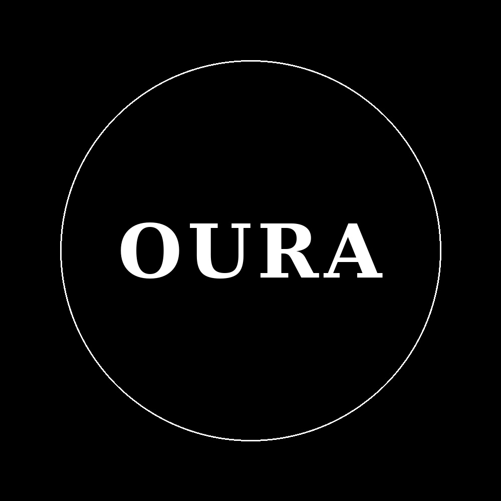
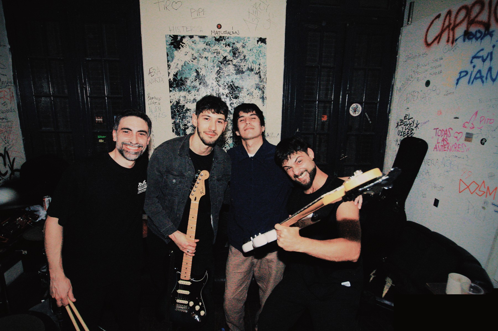
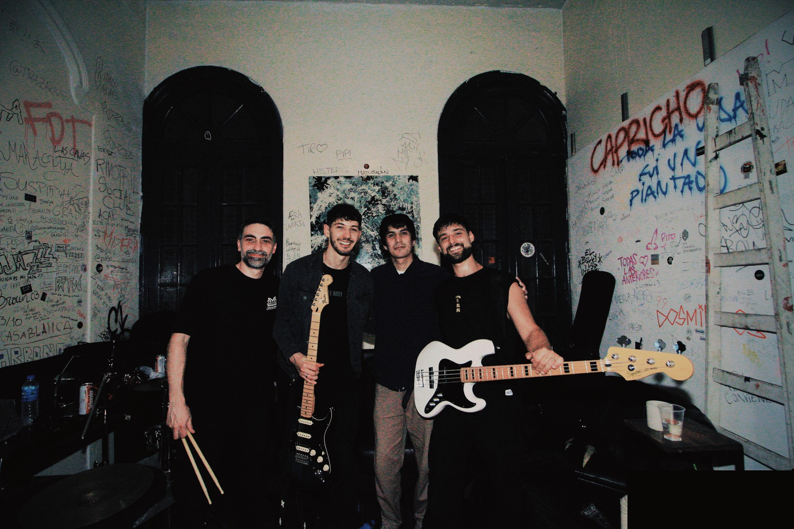
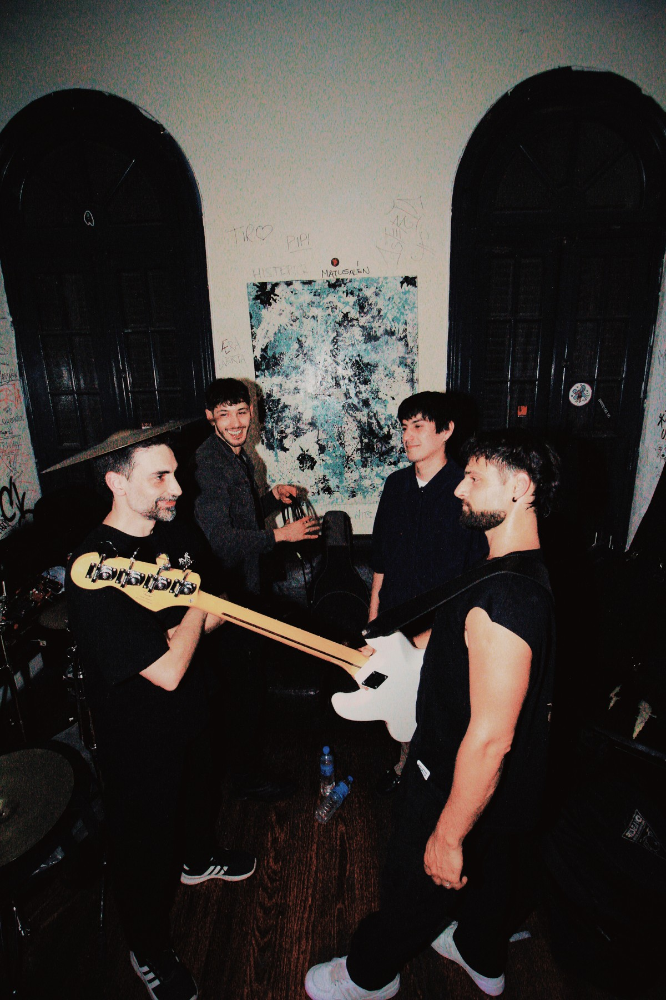
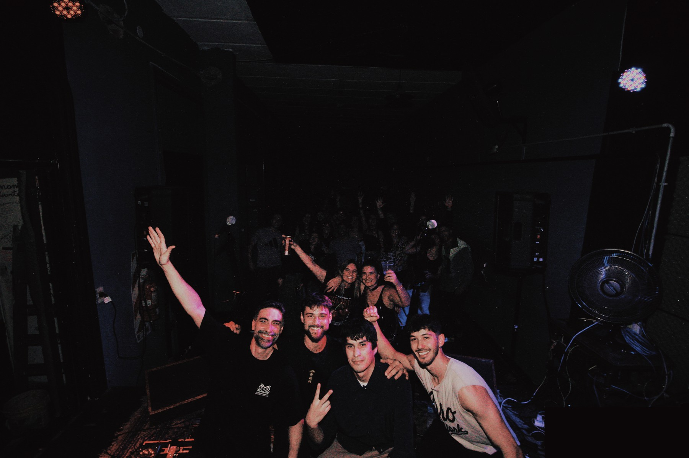

DEMO / 001MAQUETA01 — 03:50
Hola
OURA · Rock argentino
0:003:50
Una maqueta. El comienzo de algo.
Créditos / Hola
Javier Roldán · Voz
Pablo Perez Petit · Guitarras y producción
Gerardo Cei · Bajo y coros
Rodrigo Foussats · Batería
OURA / ROCK ARGENTINO
Guitarra, bajo, voz y batería.
Rock argentino con un sonido actual.

ASÍ SUENA LO QUE SOMOS.01 / OURA01 / NUEVA CANCIÓN
Nuestra nueva canción.
Escuchá un adelanto en versión maqueta.
“Hola” habla de perseguir un sueño cuando los demás no te creen capaz. De empezar desde abajo y animarte a intentarlo, incluso frente a la subestimación y el qué dirán.
No se trata de presumir lo conseguido. Se trata de demostrar que podés dar el primer paso.

DEMO / 001OURA · Rock argentino
Una maqueta. El comienzo de algo.
Créditos / Hola
Javier Roldán · Voz
Pablo Perez Petit · Guitarras y producción
Gerardo Cei · Bajo y coros
Rodrigo Foussats · Batería
02 / EN MOVIMIENTO
Un fragmento de la banda en acción.
Subí el volumen.
03 / LA BANDA
Somos OURA. Rock argentino.
Somos una banda argentina de guitarra, bajo, voz y batería. Reunimos la energía del rock con estructuras clásicas de canciones y un sonido actual.
VOLVER A LA MÚSICA ↑04 / EN VIVO
OURA EN VIVO
05 / DE CERCA



06 / STICKERS & MERCH
La banda también sale del escenario.
Para conocer los próximos diseños y consultar disponibilidad, escribinos por Instagram.
Consultar por merch